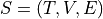
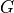

Pipeline
Given a Link Stream , we define the induced weighted graph  of a link stream as , whose nodes are the nodes present in
 , and whose edges are all the edges that occur in , their weights are the number of occurences in .
We also define the induced timeserie
, and whose edges are all the edges that occur in , their weights are the number of occurences in .
We also define the induced timeserie  as , with the set of edges at time
as , with the set of edges at time  .
.A link stream can then be seen as a bipartite graph where the top nodes are the edges of the induced weighted graph, the degree of the nodes are the weight of the edges, and the bottom nodes are the timestamps of the induced timeserie, their degree are the values of the timeserie.
Given all this, the generic pipeline used for all generated datasets provided in the benchmark is the following:
Get the weighted edges of the induced graph and the induced timeserie
Generate the “normal” link stream by generating the bipartite graph using the weighted edges and the timeserie
Generate the “anomaly” link stream by generating the bipartite graph using the “anomaly” weighted edges and the “anomaly” timeserie”
Running the Pipeline
The bash script benchmark_pipeline.sh wraps all the tools used to run the complete pipeline. The scripts takes as input a configuration file (stored in the conf/ folder, see example configuration files in conf/) and runs the needed steps to generate the output link-stream.
In order, to run the complete pipeline you need :
preparator/ : contains scripts used to prepare the Taxi and the MAXI datasets. The Peru and Bitcoin datasets are already in usable format. The output of preparator should be a (gzipped) text file containing a list of (t,u,v).
processors/ :
prepare_data.sh & utils.sh : bash scripts, takes a list of (t,u,v) as input (ex output of preparator), removes loops and multiple links from the link-stream, round the timestamps to an integer (according to “grain” parameter given as input), start the first timestamp at 0, and sort the output according to time. From the processed link-stream, extract the edges weights list, the timeserie, the weight distribution and the timeserie distribution. The output of prepare_data.sh is made of 5 files (the link-stream as a list of (t,u,v), the edges weight list, the timeserie, the weight distribution and the timeserie distribution)
- GTgenSee GTgen doc for more details. GTgen is a Python package used to generate a timeserie with anomalies, and a weighted graph with anomalies. The graph and timeserie can be generated either from models, or from datasets.
When using models, the graph is generated using an Erdos-Renyii model, and anomalies are added as small Erdos-Renyii with higher density inside the graph. The timeserie is generated as a white noise, with regime-shift as anomaly. When using datasets, the graph is generated by generating a uniformly picked random graph with the same degree sequence as the input graph, while keeping some “stubs” as an Erdos-Renyii anomaly with higher density. The tiemserie is generated by shuffling the input timeserie, while keeping the higher values to use as the “anomaly” (regime shift). In all cases, the outputs of GTgen are four text files, the first one is the list edges of the induced “normal” graph with their weights, then we have the timeserie, and finaly the “anomaly” graph and “anomaly” timeserie in the same formats.
- link-stream-generatorSee genbip doc for more details. Genbip is a Python packaged used to generate a uniformly picked random timeserie given it’s induced graph and timeserie. When given an anomaly graph and an anomaly timeserie, they can be used to generate a link-stream anomaly.
To create a link-stream, genbip generates a bipartite graph using the edges of the induced graph as the “top” nodes, and their weights as the “top” degree sequence, the timestamps of the timeserie as “bottom” nodes, and the value of the timeserie at these timestamps as the “bottom” degree sequence. The bipartite graph is then generated using a modified havel-hakimi model to generate a (biased) realization of the bipartite degree sequence, then random edge swaps are used to generate a uniform sample. The output of link-stream-generator is a link-stream stored in a text file as a list of (t,u,v), and another text file giving the list of (t,u,v) of the anomaly.